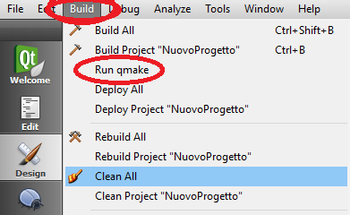
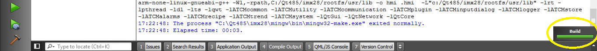
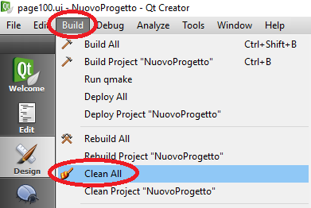

Nel caso in cui sia stata eseguita almeno una di queste operazioni:
Aggiornamento versione MectSuite
Rimozione pagina
Spostamento della cartella di progetto
Utilizzo di Qt Linguist (non segnala alcun errore di compilazione ma non si vedono le traduzioni)
occorre fare una “pulizia” del progetto per evitare di avere errori durante la compilazione.
In particolare premere Build → Run qmake

Attendere che la barra diventi verde.

Successivamente premere Build → Clean All

Attendere che la barra diventi verde.
Successivamente premere Build → Run qmake
Attendere che la barra diventi verde.
Premere Build → Build All.